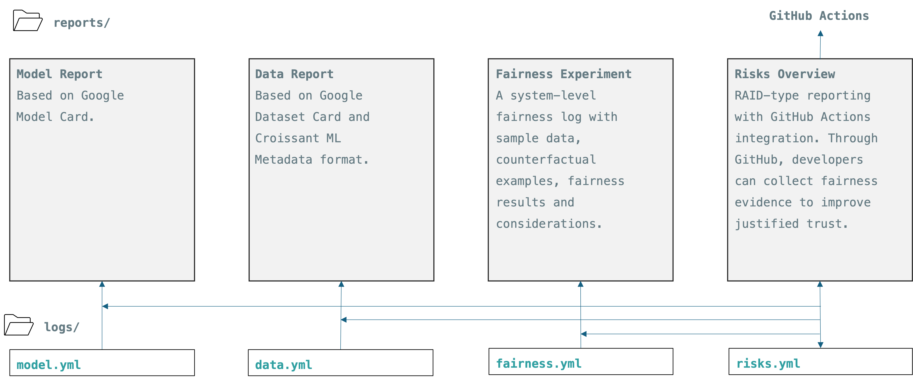

In this document, we focus on the data flow throughout the AI development pipeline and how our tool, FAID, interact with data in various stages.
Bias: in AI development refers to systematic errors that result in unfair outcomes, often due to imbalanced or prejudiced data used in training.
Discrimination: occurs when an AI system treats individuals or groups differently based on sensitive attributes, like race or gender, leading to unequal outcomes.
Fairness: in AI aims to ensure that the model's outcomes are equitable across different groups, minimizing biases and unintended discrimination.
Fairness notion: is a formal representation or expression used to define fairness criteria in an AI model.
Fairness metric: is a quantifiable measure used to evaluate how well an AI system adheres to fairness criteria, often comparing performance across different demographic groups.
ICO Point of View – Excerpts from their Guidance on AI and data protection
“Bias is an aspect of decision-making. It is a trait often detected not just in AI systems but also humans or institutions.”
“We refer to discrimination as the adverse effects that result from bias.”
“Fairness in data protection law includes fair treatment and non-discrimination. It is not just about the distribution of benefits and opportunities between members of a group. It is also about how you balance different, competing interests. For example, your own interests and the interests of individuals who are members of that group.”
Achieving fairness in product development is a shared responsibility among all stakeholders, including developers, business analysts, product owners, designers, and user researchers. We should consider this interdisciplinary need in every stage of a business process:
Identification (of potential issues and challenges)
Monitoring (of identified fairness concerns)
Managing (the risks → [Reject, Transfer, [Accept → [Mitigate, Contingency, …]]])
These steps are valid for each AI use case:
Shallow ML Model Development
Deep ML Model Development
AI Orchestration (Agentic Systems)
Each AI use case shares the following ML development steps (it is often a cyclic process as it is illustrated in Figure 1.):
Data selection
Data transformation
Data validation
Model experiments (training)
Active learning
Model development
Model serving
Model deployment
Anomaly detection
Drift detection
From both data protection and anti-discrimination point of views, data selection requires a special analysis considering the interaction with user. Because some “sensitive/protected characteristics” related data cases might require “explicit consent.” It is called “special category data.” The table below summarises which protected characteristics are also covered by special category. See: https://ico.org.uk/for-organisations/uk-gdpr-guidance-and-resources/lawful-basis/special-category-data/what-is-special-category-data/
See ICO’s guidance on this issue: https://ico.org.uk/for-organisations/uk-gdpr-guidance-and-resources/lawful-basis/special-category-data/what-are-the-conditions-for-processing/#conditions1
| Protected characteristics in the Equality Act 2010 | Special category data in UK data protection |
|---|---|
|
race religion or belief sexual orientation |
racial or ethnic origin religious or philosophical beliefs sexual orientation |
|
age disability gender reassignment marriage and civil partnership pregnancy and maternity sex |
political opinions trade union membership genetic data biometric data (where used for identification purposes) health sex life |
Source: https://ico.org.uk/for-organisations/uk-gdpr-guidance-and-resources/artificial-intelligence/guidance-on-ai-and-data-protection/how-do-we-ensure-fairness-in-ai/what-about-fairness-bias-and-discrimination/ (Accessed: Oct 16, 2024)
In ML engineering, development processes consist of several steps, involving multiple stakeholders. Throughout this document, we consider the interaction between the overall process and following four main stakeholder groups:
Data scientists and ML practitioners
Business analysts and domain experts
Ethicists and fairness experts
Regulatory, compliance, trust and safety teams
A fairness management pipeline integration into a ML Dev pipeline can be illustrated as following:
Figure 1. ML Development Lifecycle and integration of continuous monitoring of fairness
The data can be in four states throughout the ML development pipeline:
Collection
Processing
Use
Storage (idle)
We used ODI’s recent data taxonomy to define the potential data sources in AI development. Note that this document does not cover all the possible movement or use of data in the entire pipeline. This document presents an overview of potential issues, maps it to ICO considerations and guidance, and presents some use cases from our experiments.
The following table is a taxonomy of the data involved in an AI workflow. These data types can emerge in the development, deployment or monitoring stages. (https://theodi.org/news-and-events/blog/a-data-for-ai-taxonomy/)
| Category | Type of Data | Description |
|---|---|---|
| Developing AI systems | Existing data | Data not directly used for model training but as the basis for creating training datasets. |
| Developing AI systems | Training data | Data processed to train AI models by helping them recognize patterns and improve accuracy. |
| Developing AI systems | Reference data | Data used to enrich training datasets with context, such as knowledge graphs or linguistic resources. |
| Developing AI systems | Fine-tuning data | Smaller datasets used to adapt pre-trained models for specialized tasks while preserving their capabilities. |
| Developing AI systems | Testing and validation data | Data used to test models during development to ensure accuracy and representativeness. |
| Developing AI systems | Benchmarks | Datasets used to evaluate a model's performance and accuracy against unseen data. |
| Developing AI systems | Synthetic data | Algorithmically generated data used for training, fine-tuning, or benchmarking models. |
| Developing AI systems | Data about the data | Information about the datasets used to develop AI models, such as their size, source, and composition. |
| Deploying AI systems | Model weights | Numerical values representing the relationships learned by a model during training. |
| Deploying AI systems | Local data | Data an AI model processes in a specific deployment context, depending on its purpose and architecture. |
| Deploying AI systems | Prompts | Instructions or queries given to AI systems to generate responses, commonly in generative models. |
| Deploying AI systems | Outputs from models | Generated data from AI systems, such as text, audio, video, or structured outputs. |
| Monitoring AI systems | Data about models | Information disclosed about AI models, including version, performance, and ethical considerations. |
| Monitoring AI systems | Data about model usage and performance in context | Data collected during model use, such as query logs and performance metrics, used for improvements. |
| Monitoring AI systems | Registers of model deployments | Authoritative lists of AI models deployed in specific contexts or sectors, maintained by governments or organizations. |
| Monitoring AI systems | Data about the AI ecosystem | Data about the broader AI ecosystem, including models, incidents, policies, and workforce statistics. |
Keep an eye on: Smart Data Schemes (https://www.gov.uk/government/publications/the-smart-data-roadmap-action-the-government-is-taking-in-2024-to-2025) and how this new data sharing scheme can affect the overall data flow management. Open Banking is a working example.
How do algorithms account for different demographic groups, geopolitical issues, socio-economic changes or infrastructure concerns?
How can we achieve fairness and eventually trust with transparency?
What should be the level of transparency?
Based on the answers and selected demographic, socioeconomic or any other sensitive/protected attribute groups, select fairness notions.
Figure 2 illustrates the fairness ontology used in this document:

Figure2. Fairness ontology for group and individual fairness notions. The image is obtained from Fairness Ontology GitHub Repo
Here is an overview of a potential data flow during a fairness evaluation technique:
In the data analysis, model testing and validation processes, selected fairness metrics can be applied (e.g. Statistical Parity Difference, Disparate Impact, Demographic Parity, Equal Opportunity Difference, Average Odds Difference, Individual Fairness Metric (Consistency)). These are model agnostic methods and can be applied without seeing model or data details. The developers need the aggregated results about model performance, such as accuracy, precision, recall, etc.
The following table list the methods that require accessing either data or model details.
| Technique Name | Description | Category | Sub-Category | Fairness Approach | Project Lifecycle Stage | Model Dependency | Example Use Case |
| Algorithmic Fairness using K-NN | Uses K-nearest neighbours to assess individual fairness by comparing predictions among similar instances. | Fairness Metrics and Evaluation | Individual Fairness Metrics | Individual Fairness | Data Analysis; Model Testing & Validation | Model-Agnostic | Evaluating fairness in personalised recommendation systems. |
| Counterfactual Fairness (Causal Modelling) | Ensures predictions remain the same in a counterfactual world where protected attributes are altered. | Causal Fairness Methods | Counterfactual Fairness | Individual Fairness | Model Selection & Training | Model-Specific | Assessing fairness in loan approvals by simulating changes in applicant's race. |
| Path-Specific Counterfactual Fairness | Considers specific causal pathways, allowing fairness interventions on certain paths. | Causal Fairness Methods | Counterfactual Fairness | Individual Fairness | Model Selection & Training | Model-Specific | Modelling fair decisions in advertising without altering legitimate causal effects. |
| Causal Fairness Assessment with Do-Calculus | Utilises causal inference techniques to assess and mitigate bias by computing interventional distributions. | Causal Fairness Methods | Causal Inference | Causal Fairness | Data Analysis; Model Testing & Validation | Model-Specific | Understanding bias in hiring decisions through causal relationships. |
| SHAP Values for Fairness | Uses SHAP (SHapley Additive exPlanations) to attribute model predictions to input features, helping to identify bias contributions. | Interpretability and Explainability | Feature Attribution Methods | Individual Fairness | Model Testing & Validation; Model Documentation | Model-Agnostic | Explaining biased predictions in loan approvals by examining feature contributions. |
The main benefit of logging and reporting functionalities from a data protection perspective is minimising the data access and transfer requests between different parties. If we can enable a fully “trustworthy” recording format, we can use the aggregated (and anonymised) metadata and share it between different teams (internal and external).
A fairness log should be recorded for each fairness experiment, including both evaluation and mitigation experiments. The log entities include:
|
name context: - authors - start time - description - tags - hardware - license_info |
data: - sample - variable profile - sensitive characteristics: |
model: - name - sample data: -- tps: [] -- fps: [] -- tns: [] -- fns: [] |
bias metrics: - facets: -- name: "" --- description: "" --- metrics: --- description: "" --- value: 0 --- threshold: "" --- label: "" --- notes: "" |
The suggested transparent reporting process illustrated in Figure 3.

Risk logging follows a RAID format.
|
risks: - description: "" - impact: "" - likelihood: "" - mitigation: "" |
assumptions: - description: "" - impact: "" - action: "" |
issues: - description: "" - impact: "" - status: "" - action: "" |
dependencies: - description: "" - impact: "" - status: "" - action: "" |
The transparency log follows the same standards with the UK’s Algorithmic Transparency Recording Format. See: https://www.gov.uk/government/collections/algorithmic-transparency-recording-standard-hub
The rejection case is automatically reported in the transparency report, with the following details:
Risk details
Potential dependencies
Rejection reason
The transfer case is automatically reported in the transparency report, with the following details:
Risk details
Potential dependencies
Transfer reason
Transfer location
Transfer monitoring plan
In case accepting the risks, two new processes shall be initiated:
Contingency planning
Mitigation planning
Selected fairness mitigation approaches can be applied:
| Technique Name | Description | Category | Sub-Category | Fairness Approach | Project Lifecycle Stage | Model Dependency | Example Use Case |
| Reweighing | Assigns weights to instances in the training data to ensure different groups are equally represented in all labels. | Pre-Processing Techniques | Data Transformation | Group Fairness | Preprocessing and Feature Engineering | Model-Agnostic | Balancing gender representation in credit approval datasets before training a classifier. |
| Disparate Impact Remover | Edits feature values to reduce dependence between features and protected attributes, aiming to mitigate disparate impact. | Pre-Processing Techniques | Data Transformation | Group Fairness | Preprocessing and Feature Engineering | Model-Agnostic | Adjusting salary features to reduce gender bias in income prediction models. |
| Optimised Pre-Processing | Modifies training data features and labels to induce fairness while preserving data utility. | Pre-Processing Techniques | Data Transformation | Group Fairness | Preprocessing and Feature Engineering | Model-Agnostic | Adjusting criminal justice data to reduce racial bias before training models. |
| Relabelling | Changes labels of certain instances in training data to reduce bias, often based on fairness constraints. | Pre-Processing Techniques | Data Transformation | Group Fairness | Preprocessing and Feature Engineering | Model-Agnostic | Modifying labels in loan default datasets to mitigate historical biases. |
| Preferential Sampling | Re-samples data with preference for certain groups to achieve fair representation in training datasets. | Pre-Processing Techniques | Data Transformation | Group Fairness | Preprocessing and Feature Engineering | Model-Agnostic | Oversampling minority groups in medical data to train unbiased models. |
| Fairness Through Unawareness | Ensures the model does not use protected attributes in decisions; however, indirect bias may persist. | Pre-Processing Techniques | Data Transformation | Group Fairness | Preprocessing and Feature Engineering | Model-Agnostic | Removing gender as a feature in employee promotion predictions. |
| Technique Name | Description | Category | Sub-Category | Fairness Approach | Project Lifecycle Stage | Model Dependency | Example Use Case |
| Learning Fair Representations | Learns latent representations that encode data well but obfuscate information about protected attributes. | In-Processing Techniques | Fair Representation Learning | Group Fairness | Preprocessing and Feature Engineering | Model-Agnostic | Creating unbiased data representations for hiring algorithms. |
| Fairness GAN | Employs Generative Adversarial Networks to generate fair representations of data that obfuscate protected attributes. | In-Processing Techniques | Fair Representation Learning | Group Fairness | Preprocessing and Feature Engineering | Model-Specific | Creating unbiased datasets for training fair image recognition models. |
| Adversarial Debiasing for Text | Applies adversarial debiasing techniques specifically to textual data to mitigate biases in language models. | In-Processing Techniques | Adversarial Debiasing | Group Fairness | Model Selection & Training | Model-Specific | Reducing gender bias in sentiment analysis models by adversarial training on text data. |
| Fair Adversarial Networks | Extends adversarial debiasing by incorporating fairness into deep learning via adversarial training. | In-Processing Techniques | Adversarial Debiasing | Group Fairness | Model Selection & Training | Model-Specific | Reducing bias in facial recognition systems with adversarial networks. |
| Prejudice Remover Regulariser | Incorporates a fairness penalty into the learning objective to penalise models that encode biases with respect to protected attributes. | In-Processing Techniques | Fairness-Constrained Optimisation | Group Fairness | Model Selection & Training | Model-Specific | Training logistic regression models with fairness constraints for university admissions. |
| Meta Fair Classifier | Modifies any classifier to optimise for fairness metrics using a meta-learning algorithm. | In-Processing Techniques | Fairness-Constrained Optimisation | Group Fairness | Model Selection & Training | Model-Agnostic | Applying fairness optimisation to models in employee evaluation systems. |
| Exponentiated Gradient Reduction | Formulates fairness as a constrained optimisation problem, using exponentiated gradient methods to find optimal classifiers. | In-Processing Techniques | Fairness-Constrained Optimisation | Group Fairness | Model Selection & Training | Model-Agnostic | Training fair classifiers for employment screening processes. |
| Fair Transfer Learning | Adapts models trained on one domain to another while preserving fairness constraints across domains. | In-Processing Techniques | Fair Representation Learning | Group Fairness | Model Selection & Training | Model-Specific | Transferring fairness-aware models from one region's data to another in healthcare analytics. |
| Adaptive Sensitive Reweighting | Dynamically adjusts weights during training based on model performance across different groups. | In-Processing Techniques | Fairness-Constrained Optimisation | Group Fairness | Model Selection & Training | Model-Agnostic | Balancing performance in speech recognition across accents and dialects. |
| Multi-Accuracy Boosting | Improves accuracy uniformly across groups by correcting errors where the model performs poorly for certain groups. | In-Processing Techniques | Fairness-Constrained Optimisation | Group Fairness | Model Selection & Training | Model-Agnostic | Enhancing model performance for underrepresented groups in disease prediction. |
| Diversity Constraints in Recommendations | Incorporates diversity and fairness constraints in recommendation systems for varied and fair content exposure. | In-Processing Techniques | Fairness-Constrained Optimisation | Group Fairness | Model Selection & Training; System Design and Implementation | Model-Specific | Ensuring fair representation of genres in music recommendation platforms. |
| Bayesian Fairness Regularisation | Applies Bayesian methods to include fairness as a prior, allowing probabilistic interpretation of fairness constraints. | In-Processing Techniques | Fairness-Constrained Optimisation | Group Fairness | Model Selection & Training | Model-Specific | Applying fairness regularisation in Bayesian models for credit risk assessment. |
| Threshold Optimiser | Adjusts decision thresholds for different groups to satisfy fairness constraints post-training. | Post-Processing Techniques | Outcome Adjustment | Group Fairness | Model Testing & Validation | Model-Agnostic | Ensuring equal acceptance rates in college admissions across demographics. |
| Reject Option Classification | Changes decisions where the model is least certain, favouring the disadvantaged group within this uncertain region. | Post-Processing Techniques | Outcome Adjustment | Group Fairness | Model Testing & Validation | Model-Agnostic | Mitigating bias in hiring decisions by adjusting uncertain predictions. |
| Calibration with Equality of Opportunity | Adjusts probabilities to achieve equal true positive rates across groups while maintaining calibration within each group. | Post-Processing Techniques | Calibration Methods | Group Fairness | Model Testing & Validation | Model-Agnostic | Balancing opportunity in credit scoring across different ethnic groups. |